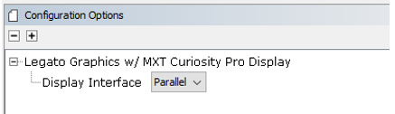
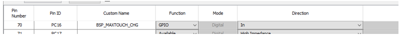
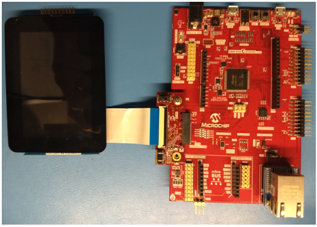
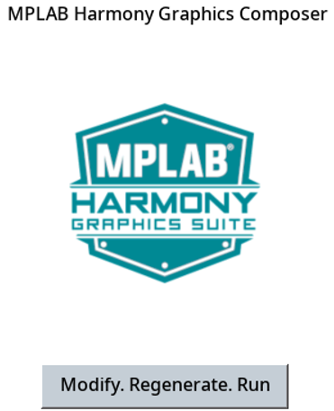
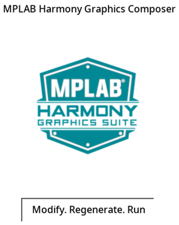

This demonstration provides a touch-enabled starting point for the Legato Graphics.
This demonstration serves as a preconfigured starting point for a touch-enabled application powered by the Legato User Interface Library. The design contains an image widget, a label widget and a button widget.
The application uses the Legato Graphics library to render text on a label widget, an image and a user-interactive button to the screen. Touching the button on the screen will show the button being pressed.
The block diagram(s) below show(s) the various software and hardware blocks used in this application:
legato_quickstart_e54_cult_xpro_parallel
This configuration runs on the SAM E54 Curiosity Ultra board with a 24-bit passthrough GFX interface card and a maXTouch Curiosity Pro display. The maXTouch Curiosity Pro display has an ILI9488 display controller that is connected to the SAM E54 thru the port/GPIO peripheral using an 8-bit 8080/Parallel interface. The Legato graphics library draws the updated sections of the frame to an internal scratch buffer which is used by the ILI9488 display driver to update the ILI9488 display controller.

User touch input on the display panel is received thru the PCAP capacitive touch controller, which sends a notification to the Touch Input Driver. The Touch Input Driver reads the touch information over I2C and sends the touch event to the Graphics Library thru the Input System Service.
• Legato Graphics Library
• ILI9488 display 8-bit parallel mode driver
• Time system service, timer-counter peripheral library and driver
• 16-bit RGB565 color depth support (65535 unique colors)
• Port/GPIO peripheral
The Project Graph diagram below shows the Harmony components that are included in this application. Lines between components are drawn to satisfy components that depend on a capability that another component provides.

Adding the “SAM E54 Curiosity Ultra BSP” and “Legato Graphics w/ MXT Curiosity Pro Display” Graphics Template component into the project graph will automatically add the components needed for a graphics project and resolve their dependencies. It will also configure the pins needed to drive the external peripherals like the display.
The Display Interface in the “Legato Graphics w/ MXT Curiosity Pro Display” template is configured to “Parallel” mode.

In the Pin Settings, the BSP_MAXTOUCH_CHG pin is set for PC16, GPIO, In.

In MPLABX, open the project in gfx\apps\legato_quickstart\firmware
The following table lists and describes this configuration:
|
Project Name |
BSP Used |
Graphics Template Used |
Description |
|
legato_qs_e54_cult_xpro_parallel.X |
SAM E54 Curiosity Ultra BSP |
Legato Graphics w/ MXT Curiosity Pro Display |
SAM E54 Curiosity Ultra w/ maXTouch Curiosity Pro display via 8-bit parallel interface |
Note: This application may contain custom code that is marked by the comments "// START OF CUSTOM CODE ..." and "// END OF CUSTOM CODE". If you use the MPLAB Harmony Configurator to regenerate the application code, do not remove or replace the custom code.
This section describes how to configure the supported hardware.
Description
SAM E54 Curiosity Ultra board with 24-bit Passthrough GFX interface board and maXTouch Curiosity Pro Display
On the backside of the maXTouch Curiosity Pro display, set the IM[2:0] switches to ‘011’ for 8-bit MCU mode.

Connect display to the 24-bit Passthrough GFX interface board. Make sure that the S1 switch on the GFX interface board is set to 1. The final hardware set-up should be:

Power up the board by connecting the power adapter to power connector or a powered USB cable to the DEBUG USB port on the board.
This section provides information on how to run and use the application.
Description
When power-on is successful, the demonstration will display a similar menu to that shown in the following figure:

When Modify. Regenerate. Run. is touched, the button will toggle.

|
MPLAB® Harmony Graphics Suite Applications
|